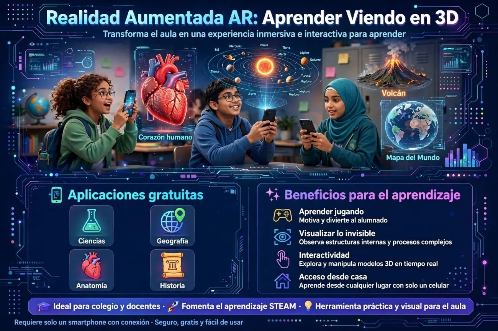

Realidad Aumentada (AR) para el Aprendizaje: Apps Gratuitas para Estudiar con Modelos 3D
¿Qué es la Realidad Aumentada en educación?
Imagina que apuntas la cámara de tu celular hacia una hoja de papel y, de repente, un corazón humano en 3D aparece flotando sobre tu escritorio. Puedes girarlo, acercarlo, ver cómo late y leer información sobre cada válvula. Eso es la Realidad Aumentada (AR): una tecnología que superpone imágenes, modelos 3D, videos y sonidos sobre el mundo real que ves a través de tu pantalla.
A diferencia de la Realidad Virtual (RV), que te sumerge en un mundo completamente digital, la AR añade capas digitales a tu entorno real. No necesitas gafas especiales ni equipos caros: con tu celular o tablet es suficiente.
¿Cómo funciona? Tres formas sencillas
- Con marcadores (imágenes impresas) Descargas una imagen especial (un marcador), la imprimes o la muestras en pantalla, y la app reconoce esa imagen para proyectar el modelo 3D encima. Es la forma más común en apps educativas.
- Sin marcadores (superficies planas) La app detecta una mesa o el suelo y coloca el modelo 3D directamente sobre esa superficie. Solo necesitas mover el celular para que "escanee" el espacio.
- Basada en ubicación Apuntas el celular hacia el cielo, una calle o un monumento, y la app muestra información o modelos 3D relacionados con ese lugar.
Apps gratuitas por área de estudio
CIENCIAS
- AR-3D Science
Una app gratuita para Android que incluye modelos 3D de Física, Química y Biología. Los estudiantes pueden descargar marcadores específicos para cada materia, enfocarlos con la cámara y ver modelos interactivos con información textual y sonido. Los modelos se pueden tocar, rotar y ampliar. - RApp Chemistry(A): AR
Especializada en Química, permite visualizar los elementos de la tabla periódica en 3D. Solo necesitas descargar los marcadores, abrir la app y enfocarlos con la cámara. Es ideal para entender la estructura atómica de forma visual. - Merge Cube
Un kit de apps diseñado para aprender conceptos científicos y STEM. Al descargar las apps gratuitas y seleccionar la opción de prueba, los estudiantes acceden a un visor con más de mil ayudas didácticas digitales y simulaciones científicas interactivas. Es compatible con Android e iOS. - Chromeville Science
Combina fichas para colorear con realidad aumentada. Los estudiantes descargan las fichas, las colorean y luego, con la app, ven cómo sus dibujos cobran vida en 3D. Es especialmente útil para ciencias naturales y biología básica.
GEOGRAFÍA
- Argeo Realidad Aumentada
App gratuita para Android enfocada en Geografía. A través de códigos QR descargables, los estudiantes pueden visualizar en 3D y 2D: el globo terráqueo, volcanes, relieve submarino, terremotos, tornados y mapas de Argentina. Es de fácil manejo y no requiere conocimientos técnicos. - WWF Free Rivers
App gratuita para iOS y Android que utiliza modelos de realidad aumentada para enseñar ciencias ambientales y geografía física. Incluye 5 hábitats: el Himalaya, selvas tropicales, sabana africana, praderas de América del Sur y deltas del Sudeste Asiático. Los estudiantes pueden interactuar con los mapas de ríos del mundo y escuchar narraciones educativas. - Star Walk
Aunque no es puramente AR en todos sus modos, permite apuntar la cámara del celular hacia el cielo para visualizar en 3D planetas, constelaciones, agujeros negros y nebulosas. Muestra información sobre nombres, distancias a la Tierra y curiosidades. Es ideal para astronomía y geografía espacial. - Explora el Mundo
Permite conocer animales y monumentos de todo el mundo proyectados sobre un globo terráqueo físico (que se compra por separado) o mediante la app. Combina geografía con cultura general.
ANATOMÍA
- AR Anatomía 4D+
Los estudiantes interactúan con las partes que componen el cuerpo humano usando disparadores (tarjetas o marcadores). Pueden explorar órganos, sistemas y estructuras en 3D, con información detallada sobre cada componente. - Anatomyou
Ofrece un viaje inmersivo por el interior del cuerpo humano para aprender sobre sus distintos sistemas: respiratorio, digestivo, circulatorio y más. Aunque algunas funciones pueden ser de pago, la versión básica permite explorar modelos 3D de anatomía de forma gratuita. - ZooKazam
Pensada para clases de Biología y Ciencias Naturales, proyecta animales en 3D sobre cualquier superficie. Incluye información sobre tiempo de vida, peso, tamaño, hábitat y dieta. Es útil para entender anatomía animal comparada y biología general.
Apps para crear tu propio contenido AR (¡también gratis!)
Si eres estudiante o docente y quieres crear tus propias experiencias de realidad aumentada, existen plataformas gratuitas:
- Assemblr
Permite crear experiencias AR de forma intuitiva con plantillas y una biblioteca de objetos 3D listos para usar. Solo arrastras elementos a la escena y añades información emergente. No necesitas saber programar. - MyWebAR
Ideal para crear visitas guiadas virtuales, simulaciones de modelos moleculares o manuales con animaciones. Los resultados se comparten mediante códigos QR o enlaces accesibles desde cualquier navegador. - CoSpaces Edu
Permite crear simulaciones de experimentos en 3D, narraciones interactivas y juegos educativos. Usa un sistema de bloques visuales o JavaScript para programar acciones avanzadas. - Arloopa
Disponible para Android e iOS. Ofrece tres modos: RA basada en marcadores, sin marcadores o basada en ubicación. Las primeras 100 experiencias se pueden visualizar sin necesidad de registro.

¿Por qué usar AR para estudiar?
| Ventaja | ¿Qué significa para el estudiante? |
|---|---|
| Visualización espacial | Entiende conceptos abstractos (moléculas, órganos, planetas) como si los tuviera frente a sus ojos. |
| Mayor retención | Estudios muestran que los recursos AR aumentan la retención de conceptos hasta un 70% frente a métodos tradicionales. |
| Aprendizaje activo | El estudiante interactúa, rota, amplía y explora, en lugar de solo leer o ver. |
| Motivación | Convierte materias "difíciles" en experiencias divertidas y memorables. |
| Accesibilidad | No necesitas laboratorios físicos, modelos anatómicos costosos ni viajes para ver volcanes o monumentos. |
Requisitos técnicos básicos
Para usar estas apps solo necesitas:
- Un smartphone o tablet con cámara (la mayoría de modelos de gama media o alta de 2020 en adelante funcionan bien).
- Sistema operativo actualizado: iOS 11+ o Android 7.0+.
- Conexión a internet (algunas apps permiten descargar contenido para usarlo offline).
- Espacio libre en la memoria (los modelos 3D pueden pesar entre 10 MB y 100 MB).
- Una superficie plana bien iluminada para apps sin marcadores.
Consejo: Si tu celular es de gama baja, busca apps con modelos 3D ligeros (menos de 10 MB) o que usen marcadores en papel, ya que requieren menos potencia de procesamiento.
Cómo empezar hoy mismo
- Elige el tema que estás estudiando (anatomía, química, geografía, astronomía).
- Descarga la app correspondiente de la lista anterior (todas tienen versión gratuita).
- Descarga los marcadores si la app los requiere (normalmente están en la web oficial de la app).
- Imprime los marcadores o muéstralos en otra pantalla.
- Abre la app, enfoca el marcador y explora el modelo 3D: gíralo, acércalo, lee la información.
- Comparte con tus compañeros: muchas apps permiten capturar fotos o videos de la experiencia.
La Realidad Aumentada ha dejado de ser tecnología de futuro para convertirse en una herramienta de estudio accesible hoy. Con solo tu celular y apps gratuitas, puedes tener un laboratorio de química, un globo terráqueo interactivo o un modelo anatómico completo en tu bolsillo.
No se trata de reemplazar los libros de texto, sino de complementarlos con experiencias visuales que hagan que el aprendizaje sea más comprensible, memorable y, sobre todo, emocionante. Ya sea que estés repasando la tabla periódica, explorando el sistema solar o estudiando el corazón humano, la AR te permite ver lo invisible y tocar lo intangible.